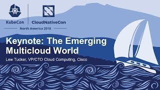
KubeCon + CloudNativeCon North America keynote.
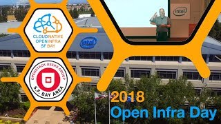
Networking for microservices: traffic management, visibility, and service authentication with Istio.
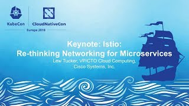
KubeCon + CloudNativeCon Europe keynote.
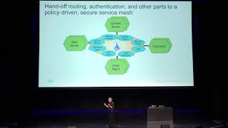
Delivering a seamless, secure experience across public clouds, private clouds, and legacy systems.
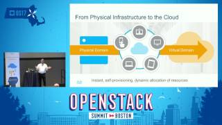
Change is happening faster than ever, and cloud platforms must keep pace.
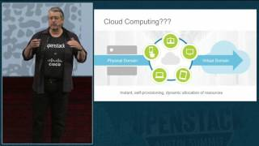
OpenStack and cloud computing expand into an ever broader range of public, private, and hybrid use cases.
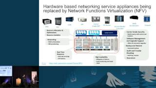
How software-driven infrastructure opens new possibilities for network service providers, media, and content companies.
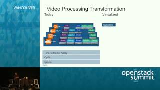
OpenStack's expansion from service providers and enterprise private clouds to media companies and big science.
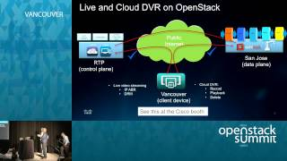
Cisco's investments in OpenStack across technology and business areas.
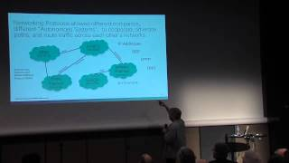
Clouds today are islands. Is it time to envision a world of many interconnected OpenStack clouds?
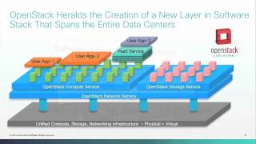
How virtualization and cloud computing are transforming the traditional data center.
Keynote address at IEEE GLOBECOM 2013.
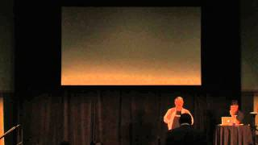
Infrastructure-as-a-Service, software-defined networking, and what OpenStack makes possible.
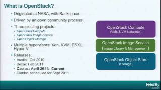
How cloud computing is changing the way we think about data centers, applications, and services.
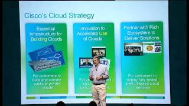
Keynote on the Cisco and Red Hat partnership and the growth of software-as-a-service.
How a 1985 Boston startup named Thinking Machines invented the architecture that led to modern AI data centers. ZKM Connection Machine Symposium, March 2026.